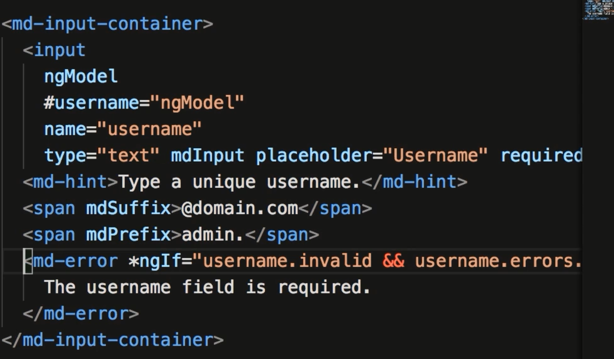

Section 15. Angular Material 2
209. What is Angular Material
- Basically bootstrap for Angular... a little fancier. It's a little easier to use then Bootstrap.
210. Installing Angular Material
- To install type: npm i --save @angular/cdk @angular/material optional packages : @angular/animation hammerjs
- You can use some of the prebuilt themes. Import into your styles.css: @import
"~@angular/material/prebuilt-themes/indigo-pink.css"
- You need to import BrowserAnimationsModule from '@angular/plaform-browser/animations' in app.module.ts
- OR:: import NoopAnimationsModule. Above is you want animations, Noop is if you don't. Add to the imports : array
- You need to import in your component in app.module.ts. For Checkboxes import:
- To test you've installed probably add:
211. Check Boxes
- Below shows that you can use md-checkbox just like regular inputs. (the onChange() event simply logged to the
console.
212. Radio Buttons
- In all cases you need to import the proper module. Look to material.angular.io to get source sample code.
213. Selects
- Import the module...MdSelectModule.
- Above shows how to create a dynamic dropdown list. ngModel is used to select a default value. (ngModel is imported from FormsModule)
214. Inputs
- Below shows how to create an input field with prefixes, suffixes and error handling using ngModel and *ngIf. (missing text is username.errors.required.

215. Text Areas
- Shows how to create a text area. Below autosizes to fit content.
216. Date Pickers
- Need to import MdDatepickerModule. (may need MdNativeDateModule??)
217. Icons
- Check out icons at: material.io/icons
- @import "https://fonts.googleapis.com/icon?family=Material+Icons";
- In app.module.ts import MdIconModule
- When adding icons names with spaces substitute with an Underscore.
- You can style in your css file.
218. Buttons
- Need to import MdButtonModule. Some directives are md-button, or md-raised-button. Background color is based on your theme.
- >You can color use color="primary or accent or warn" (based on the theme).
- Another directive is md-fab (floatable action button.). It allows you to add icons to your button.
219. Chips
- Used typically for tags, or categories... look a lot like buttons.
- Below is a way to toggle if selected (all can be selected).
- Below shows how to have only one category selected.
- This method looks at the category passed and looks for all but this category and sets the selected to false.
- It then toggles the selected property.
220. Progress Spinners
- Import MdProgressSpinnerModule. There are 2 modes, determinate or indeterminate. Determinate is a known amount of time.
- The example below used the interval function to inc progress by 1 every 20ms until it reaches 100.
- Indeterminate is used for unknown time. The example mocks getting data from a service.
- This example used the timer observable to simulate a 2 second request. During the 2 seconds the spinner is displayed.
221. Tooltips
- Import MdTooltipModule. Tooltips are a hover help option.
222. Tabs
- Import MdTabModule. This example added 20px padding to the top to class .mat-tab-body-content
223. Dialogs
- Import MdDialogModule. This example is quite involved. Dialogs when invoked are designed to open another component.
However, since this component is added dynamically you will get an error. You need to add this component to the app.module.ts field
and create another section called entryComponents. This way angular will know how to compile.
- This example also shows how to get a return value from the component.
224. Passing data to a Dialog.
- Lots of stuff here. Mostly showing what is happening under the hood. But basically follow the examples below.
226. Creating a Reusable Module
- Basically taking all the material modules and putting them in a separate module and then adding this module to the main app.module.ts.
- Also talks about cohesion principle. IE: simply put; keep similar stuff togehter.
- Use the cli to generate a module. ng g m md-components. this creates a folder and a file md-component.module.ts
- You then take all the material imports out of app.module and put in this new file. Don't need the declarations or imports, (removed from @NgModule.
- Create a new exports array and put all the declarations done above.
- You then need to import this module into app.module.ts
227. Themes.
- Themes are used to create a consist color pallette for your app. You can import a default theme or create a custom theme.
- Goto material.io/color to start building a color pallette.
228. SASS.
- A way to use variables to build css. A transpiler will convert to .css. Similar approach to transcript transpiling to javascript.
- SASS is the default for Angular.
- To implement create a .scss file such as themes.scss. You then need to add this file to the .angular-cli.json file in the styles array.
Include the path where the src folder is the root.
- Below shows how to use a variable and assign values with it.
- @mixin looks like a way of nesting css values. Below shows how you create a common set of values and then apply to settings below in our scss file.
229. Creating a custom theme.
- In order to create a custom theme you need modify your new .scss file with the following:
- To see how theses variables are defined you can go into _theme.scss and search for each variable. I believe you are simply merging settings.
230. Using Angular Materials Typography
- Deals with modifying the font. https://material.angular.io/guide/Typography
- You can import a font and use the mat- directives on elements listed in guide above.
- Globally you can add mat- to the body tag in the index.html
231. Customizing Typography
- Import your font and add to styles.css
- Below you are setting Open Sans as the "overriding font, and you are adding Helvetica and sans-serif as fall back.
Modify your theme.scss file as follows:
- You can also override some of the default settings such as headline(above)